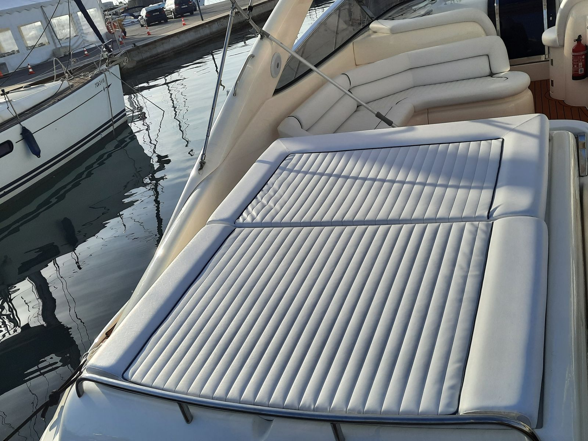
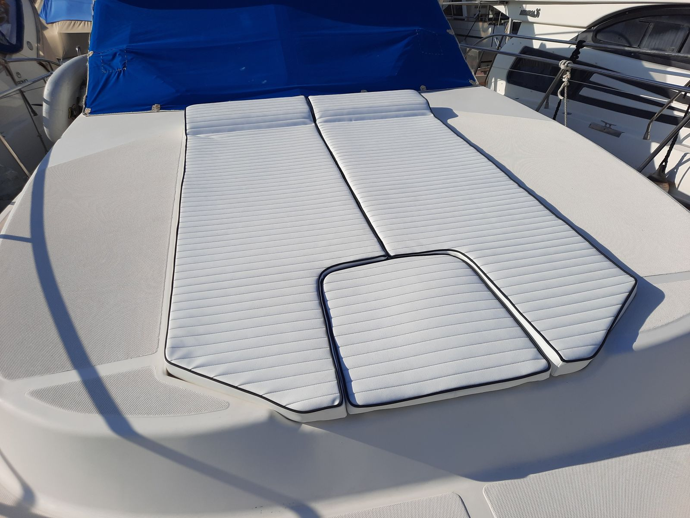
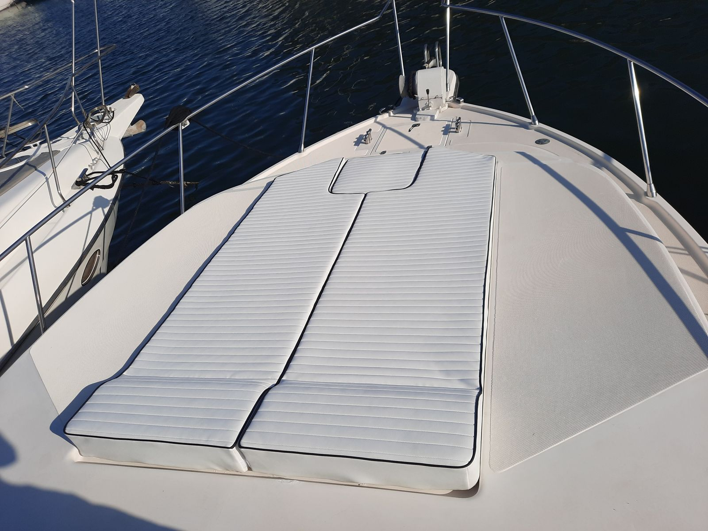
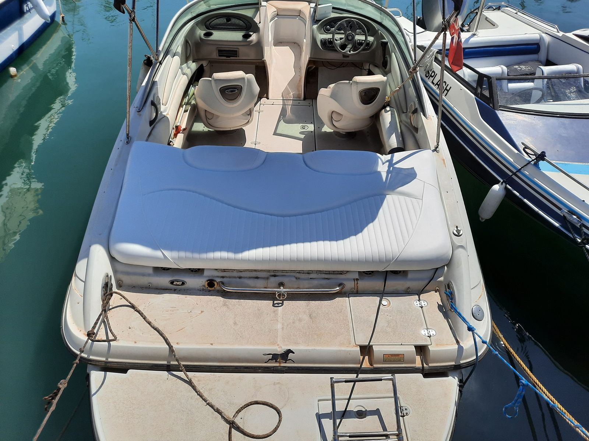
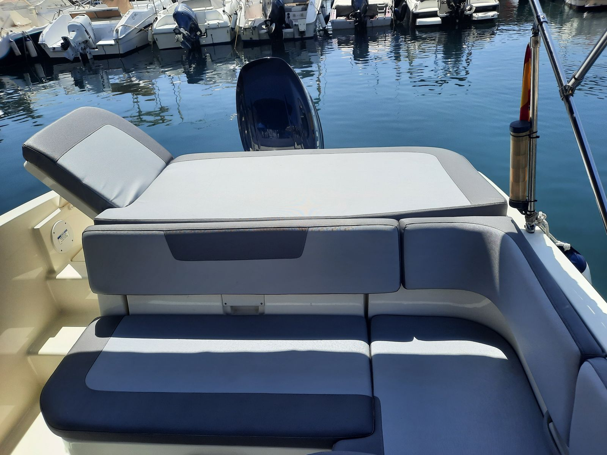
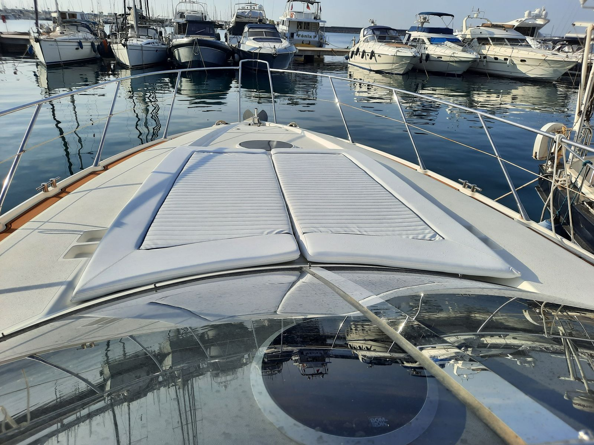
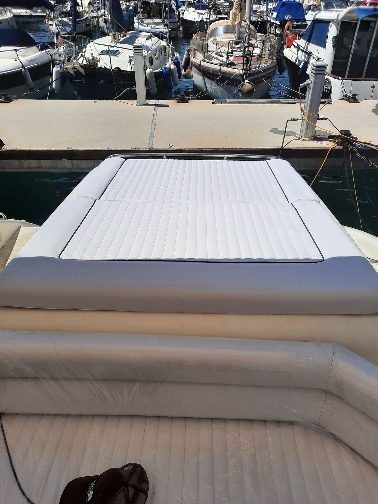
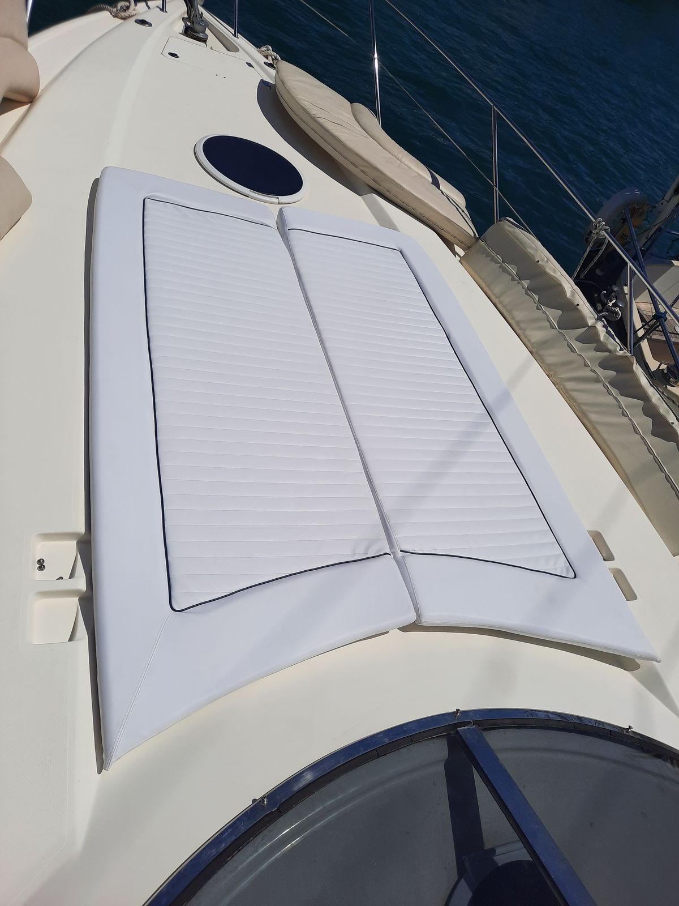

Главная / Подушки и лежаки
Если лежак потрескался, выцвел или потерял форму, мы сделаем новый в выбранном цвете и строчке из морской ткани и установим на лодке.
Мы приезжаем к вашей лодке, снимаем размеры и устанавливаем готовую работу.
Отправьте видео в WhatsApp: оценка бесплатная, ответим в тот же рабочий день.
Носовые и кормовые лежаки изнашиваются на лодке первыми: солнце выжигает цвет, швы расходятся, а поролон теряет форму. Мы делаем их заново точно по форме вашей палубы, с вырезами под люки, утки и фурнитуру на своих местах.
Кроме лежаков мы шьём подушки и спинки кокпита, подушки для обеденной зоны и каюты и лежаки для флайбриджа. Можно сохранить прежний дизайн или полностью его изменить: строчка складками, контрастный кант или сочетание двух цветов. Приезжаем на замеры в Торревьеху, Ориуэла-Косту, Гуардамар, Санта-Полу и по всему региону Вега-Баха.
Мы используем морские ткани и морской кожзам, устойчивые к ультрафиолету и солёной воде. Цвет, кант и тип строчки вы выбираете вместе с нами до начала работы. Если старый поролон разрушился или пропитался водой, предложим заменить его, чтобы подушка вернула форму.








Да. Мы снимаем точные размеры на лодке, поэтому новые подушки повторяют форму палубы и люков.
Да. Ткань, цвет и кант вы выбираете вместе с нами до начала работы.
Да. Можем сшить одну деталь в тон тем, что у вас уже есть, или обновить весь комплект.
Если поролон потерял форму или пропитался водой, предложим его заменить. Посмотрим это при оценке.
Да. Шьём подушки для обеденной зоны, каюты и спинки для внутренних помещений.
Мы работаем в Вега-Баха и окрестностях. Дальше? Пришлите видео, и мы скажем, сможем ли помочь.
Покажите, что нужно сделать, а дальше мы всё возьмём на себя.